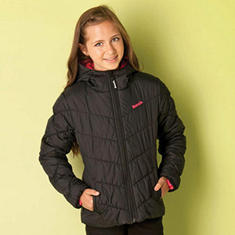

Target Audience
The target audience for SweaterWeather.com is listed below:
- Who: Working class, commuters, students, mothers, women concerned with fashion, anyone travelling or spending time outside in Idaho.
- Age: 15 - 100
- Income: $0 - $80,000
- Technology: Mobile devices and desktop access
- Motivation:Help visitors know about current events and what current and future weather will be like and what clothes they should wear to be comfortable being outside
Personas
Hannah Gendry
- Occupation: Babysitter
- Demographics and Education: 15 years old, high school student, has a regular babysitting gig.
- Goals and Motivation for using site: To make sure that she chooses the perfect outerwear to match her outfit for the day and is appropriate for the weather. She needs to be sure she is warm while travelling to her classes.
- Social: Has many friends and spends a lot of time on social media. She always wants to look her best, but still wants to be warm in the winter and stay cool in the summer. She also enjoys camping and hiking with her family and friends.
- Techonlogy: Very comfortable using a computer, but prefers using her iPhone.
- Quote: “The cuter my outfit is, the more likes I’ll get on Insta!”
Stacy Zimmerman
- Occupation: Administrative Assistant
- Demographics and Education: 27 years old, married, has young children, Associate’s Degree
- Goals and Motivation for using site: A working mother who needs to stay healthy and make sure that she stays warm throughout her day. She makes she that her kids have the right outerwear for daycare so that they can stay warm if they play outside. She wants to be prepared and know if weather will delay her in getting to and from work and day care. She also cares about local events and meet-ups for her family to attend.
- Social: Has a few friends and keeps in contact with most people on Facebook. She will sometimes update her mommy-blog on what she and her family is up to and new outfits from time to time.
- Techonlogy: Uses a computer at work so she is very comfortable, but she prefers the convenience of her tablet when checking the weather.
- Quote: “You never know what life will throw at you next, so it is best to be prepared to face anything.”
Scenarios
- When will it be cool enough to wear my new long-sleeved blouse?
- Should I wear a light sweater or take a raincoat today?
- Should I wear my waterproof boots, or will I be ok in my more fashionable ones?
- What events are coming up in the town?
- Is there anything I should do to prepare for any incoming weather?
- Can I take my kids to the park today or will it rain?